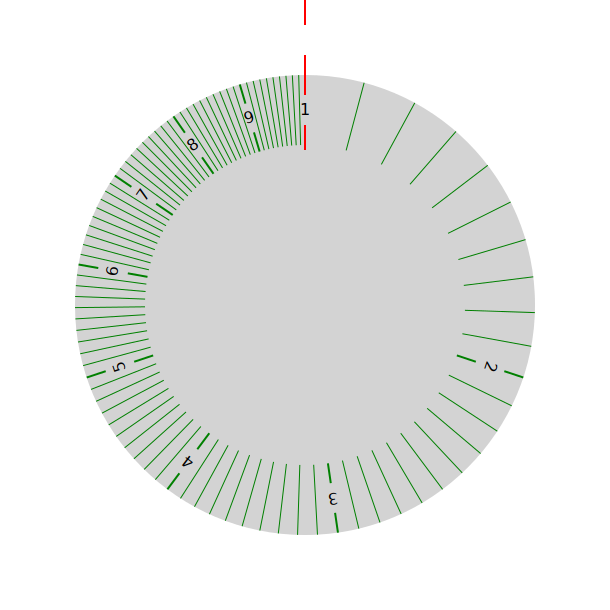
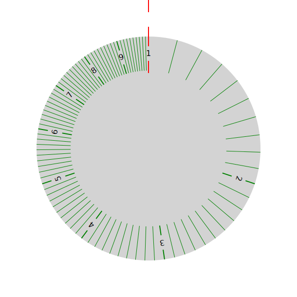

Logjam 7: What the frack is a slide-rule?
To get an understanding of how a slide-rule works, we present a gizmo below, which allows you to slide two bits: the top part with numbers, and the box with the vertical red line in it. The results can be interpreted either as an addition or a subtraction. Clicking (or touch manipulation on mobile devices, which works on some better than others, depending on device and/or browser) within the box should move the “runner/glass” part, which gives the result of the calculation (or brackets the two terms of the subtraction). The number results presented below the vertical red lines are derived from the relative positions of the bits, along with the scaling factors. I am hoping the principle is “obvious". Assuming so, you can click on the button/slider to get the slide-rule proper, with logarithmic scales enabling “easy” multiplication/division.
Adder/subtractor
Add/subtract Multiply/divide


Notice first that there are two vertical red lines at 1 and 10. There is no 0 value. On a logarithmic scale, 0 is at minus infinity (far away to the left, if you believe in such things as infinity) on the rule. Next line up 1 on the top scale with 2 on the fixed scale: notice that the distance between 1 and 2 on the top scale is the same as between 2 and 4 on the bottom. Move the runner to 2 on the top scale, if you feel the need. So we have both 2 × 2 = 4 and 4 ÷ 2 = 2 represented. But what about 5 × 5 = 25? Yes, the runner shows the calculation, but the calculation has run off the end of the bottom rule. How can you get the runner back to the bottom scale? This is the reason I have included the line on 10. Lining it up with 5 on the bottom scale, and then the runner with 5 on the top scale, gives the calculation we need up to a factor of 10 (0.500 × 5.00 = 2.50.
However, we don’t need to have 1 and 10 markers — instead we can wrap the rule around on itself so 1 and 10 (dropped) are in the same position, giving a circular structure. The object below does this. The inner section moves with suitable mouse/touch gestures. It is more difficult to arrange an easy readout in this format, so I have provided text below the discs with the relevant information, which I hope you can interpret with a bit of experimentation.
Wrapping up the rule
 
